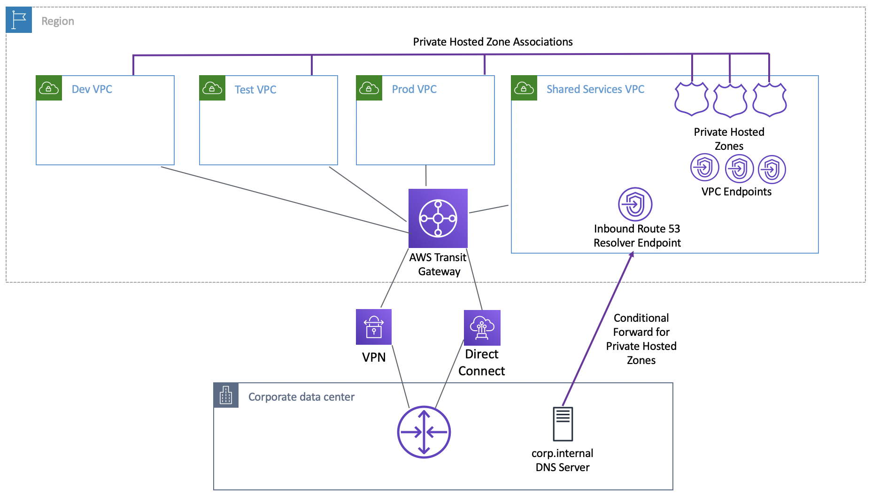

AWS Certified Advanced Networking - Specialty (ANS-C01)
Hybrid Network DNS
Hybrid networking involves connecting on-premises networks with Amazon VPCs. One of the challenges in hybrid networks is DNS resolution, as you need to ensure that DNS queries can be forwarded between the on-premises data center and Amazon VPCs. AWS offers solutions like Route 53 Resolver to enable seamless DNS management.
Route 53 Endpoints
Amazon Route 53 Resolver is used for hybrid DNS resolution across multiple accounts and VPCs, offering a centralized DNS management approach. The resolver integrates with on-premises DNS resolvers to provide a unified DNS resolution across your network.
Route 53 Primer
- DNS via the VPC .2 Address. e.g., 10.16.0.2
- .2 is reserved in every subnet
- Now called the Route53 Resolver
- Provides Route53 Public and Associated Private Zones
- Assuming no or prior to Route 53 Endpoints - Only Accessible from within a VPC
Centralized DNS Management with Route 53 Resolver
In hybrid cloud environments, managing DNS resolution across both on-premises infrastructure and AWS VPCs can be complex. Route 53 Resolver offers centralized DNS management, allowing you to resolve DNS names from on-premises to VPCs and vice versa. This is especially important when dealing with multiple VPCs in different accounts.
Design Goals with Route 53 Resolver
- Fully managed service that handles DNS resolution with high availability and reliability
- Provides query volume metrics in CloudWatch
- Preserves Availability Zone isolation and local answers
Best Practices for Route 53 Resolver
- Use .2 for DNS resolution on EC2 instances for better packet handling
- Ensure DHCP option sets point to AmazonProvidedDNS
- Use forwarding rules sparingly, only when necessary
- Consider sharing and associating private hosted zones directly across VPCs to reduce complexity and cost
Key Setup Steps for Centralized DNS
- Establish network connectivity between VPCs and on-premises using AWS Transit Gateway and Site-to-Site VPN or AWS Direct Connect
- Set up Route 53 Resolver endpoints for both inbound and outbound traffic, ensuring high availability by selecting IPs from multiple Availability Zones
- Create and associate private hosted zones across VPCs and accounts
- Use conditional forwarding rules to forward DNS queries to on-premises DNS servers
Sharing PrivateLink Endpoints Between VPCs
In environments where AWS services like Amazon SQS or Amazon ECS are accessed securely via PrivateLink, DNS resolution needs to be consistent across VPCs. By sharing PrivateLink endpoints between VPCs, you can reduce costs and simplify management.
Steps to Set Up Shared PrivateLink Endpoints
- Use AWS Transit Gateway for network connectivity between VPCs
- Configure Route 53 Resolver endpoints in the shared services VPC
- Create and associate private hosted zones for AWS services accessed via PrivateLink
- Use alias records for services like Amazon SQS to resolve to private IP addresses
Considerations
- Be mindful of cross-Availability Zone networking charges and latency
- Map Availability Zone names to Availability Zone IDs when working across accounts to ensure consistency
Links
Centralized DNS Management with Route 53 Resolver
In hybrid cloud environments, managing DNS resolution across both on-premises infrastructure and AWS VPCs can be complex. Route 53 Resolver offers centralized DNS management, allowing you to resolve DNS names from on-premises to VPCs and vice versa. This is especially important when dealing with multiple VPCs in different accounts.
Design Goals with Route 53 Resolver
- Fully managed service that handles DNS resolution with high availability and reliability
- Provides query volume metrics in CloudWatch
- Preserves Availability Zone isolation and local answers
Best Practices for Route 53 Resolver
- Use .2 for DNS resolution on EC2 instances for better packet handling
- Ensure DHCP option sets point to AmazonProvidedDNS
- Use forwarding rules sparingly, only when necessary
- Consider sharing and associating private hosted zones directly across VPCs to reduce complexity and cost
Key Setup Steps for Centralized DNS
- Establish network connectivity between VPCs and on-premises using AWS Transit Gateway and Site-to-Site VPN or AWS Direct Connect
- Set up Route 53 Resolver endpoints for both inbound and outbound traffic, ensuring high availability by selecting IPs from multiple Availability Zones
- Create and associate private hosted zones across VPCs and accounts
- Use conditional forwarding rules to forward DNS queries to on-premises DNS servers
Centralize Access Using VPC Interface Endpoints to Access AWS Services Across Multiple VPCs
Security and cost are always a top priority for AWS customers when designing their network. Amazon VPC and its related networking components, like VPC endpoints, allow private connectivity between your VPCs and AWS services. VPC interface endpoints, powered by AWS PrivateLink, allow secure, scalable, and private access to services like Amazon SQS across multiple VPCs.
My Notes
- As number of VPCs in your account grow, centralizing the interface endpoints might be cost efficient solution.
Key Setup Steps for VPC Interface Endpoints
- Create a hub VPC with interface VPC endpoints for AWS services (e.g., Amazon SQS)
- Set up VPC peering between spoke and hub VPCs
- Enable private DNS for interface VPC endpoints
- Create a Private Hosted Zone and associate it with peered VPCs for DNS resolution
- Use AWS CLI or SDK with the --endpoint-url parameter to interact with services through the private endpoint
Additional Configuration for DNS Resolution Across VPCs
- Disable Private DNS in the hub VPC if it’s enabled
- Create and associate a Private Hosted Zone for the AWS service endpoints (e.g., sqs.us-east-1.amazonaws.com)
- Ensure cross-VPC DNS resolution by associating the Private Hosted Zone with spoke VPCs
Considerations
- Ensure high availability by distributing interface VPC endpoints across multiple Availability Zones
- Monitor interface endpoint limits (e.g., 50 per VPC) and request increases if necessary
- Evaluate network costs, especially in cross-Availability Zone configurations
Links
Integrating AWS Transit Gateway with AWS PrivateLink and Amazon Route 53 Resolver
This article explores how to integrate **AWS Transit Gateway**, **AWS PrivateLink**, and **Amazon Route 53 Resolver** to manage VPC-to-VPC communication and provide hybrid DNS resolution across multiple environments. By combining these services, you can reduce the number of VPC endpoints, simplify deployments, and optimize costs. This architecture is particularly useful for large-scale VPC environments where you need to centralize and streamline connectivity, DNS resolution, and management.

Design Goals and Architecture Overview
- AWS Transit Gateway acts as a central hub for inter-VPC communication, simplifying VPC management and eliminating the need for complex VPC peering arrangements.
- AWS PrivateLink allows secure, private connectivity between your VPCs and AWS services, such as Amazon SQS, reducing exposure to the public internet and increasing security.
- Amazon Route 53 Resolver enables hybrid DNS resolution across multiple VPCs and on-premises environments, ensuring consistent DNS resolution for services shared across VPCs.
Why You Need a Custom Private Hosted Zone
When using AWS PrivateLink to create a VPC endpoint for an AWS service, **Amazon Route 53** automatically creates a Private Hosted Zone (PHZ) for you with the service’s DNS name (e.g., codebuild.us-east-1.amazonaws.com). While this works within the VPC where the endpoint is created, it does not provide DNS resolution for other VPCs or on-premises environments. By using a **Custom Private Hosted Zone**, you can resolve the service name in other VPCs and on-premises systems by associating the custom PHZ with the relevant VPCs or creating appropriate forwarding rules. This approach allows for centralized and consistent DNS resolution across multiple environments.
Key Setup Steps for VPC-to-VPC and On-Premises Connectivity
To set up the architecture and enable DNS resolution between multiple VPCs and on-premises systems, follow these detailed steps:
1. VPC-to-VPC Setup (Within the Same Account)
- Start by ensuring layer-3 connectivity between VPCs. This can be done through either VPC Peering or AWS Transit Gateway. Both options provide secure communication between VPCs, but using Transit Gateway simplifies the management of multiple VPCs in large environments.
- Create a Route 53 Custom Private Hosted Zone (PHZ) for the endpoint DNS name, such as
codebuild.us-east-1.amazonaws.com. This custom PHZ is necessary because the automatically created PHZ will only work within the VPC where the VPC endpoint is deployed.
- Within the Custom PHZ, create an alias record that points to the regional VPC endpoint's private IP address.
- Once the Custom PHZ is created, associate it with other VPCs that require access to the service. This can be done directly in the Route 53 Console for VPCs in the same account.
2. VPC-to-VPC Setup (Across Different AWS Accounts)
- If the VPCs are in different accounts, you need to share the PHZ using the AWS CLI or SDK. This can be done by configuring the sharing of the hosted zone with other accounts so that VPCs in those accounts can resolve the service name to the correct IP address.
- Ensure that the DNS resolution between VPCs is configured correctly by verifying the PHZ association in the Route 53 Console.
3. Connecting to On-Premises
- For hybrid environments, where DNS resolution is needed for services in the VPC from on-premises, set up **Route 53 Resolver** inbound endpoints. These endpoints enable DNS resolution for the VPC endpoint names from on-premises systems.
- Create conditional forwarding rules on the on-premises DNS server to forward requests for the service name (e.g.,
codebuild.us-east-1.amazonaws.com) to the inbound Route 53 Resolver endpoint IP addresses.
- Ensure that layer-3 connectivity between your on-premises network and the AWS environment is established via AWS VPN or AWS Direct Connect through a Transit Gateway or Virtual Private Gateway (VGW).
Best Practices
- Deploy VPC endpoints and **Route 53 Resolver endpoints** in multiple Availability Zones (AZs) for high availability and fault tolerance.
- Use the default **AmazonProvidedDNS** (.2 resolver) for EC2 instance DNS resolution to ensure the highest level of availability, scalability, and low-latency DNS queries.
- Monitor throughput and DNS query limits to ensure that your architecture can scale without hitting the 10,000 DNS queries per second per resolver limit.
Key Design Considerations and Pitfalls
- Avoid using the **".2 resolver"** for DNS query forwarding between VPCs, as this can lead to performance issues, especially when scaling.
- Ensure **high availability** by deploying **multiple AZs** for both inbound and outbound Route 53 Resolver endpoints, minimizing the risk of single points of failure in your DNS infrastructure.
- Limit the use of **Route 53 Resolver rules** for VPC-to-PHZ name resolution, as excessive use can introduce additional latency and increase complexity.
Links